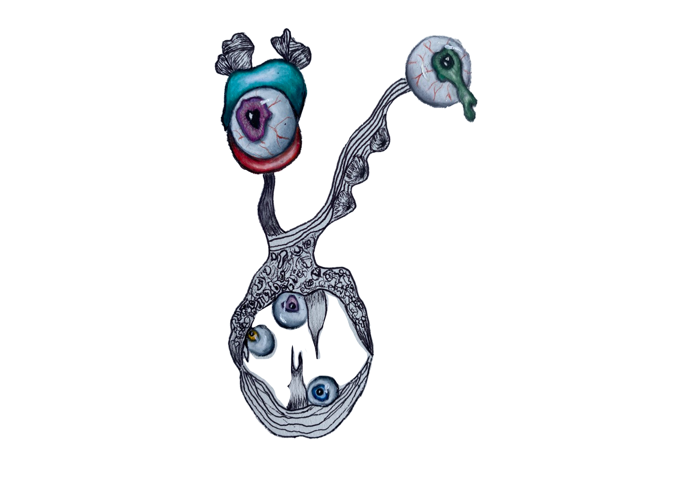

Consciousness is typically associated with how we experience life, in a state of controlled awareness, but out subconcious thoughts greatly influence where we direct this awareness.
Discomfort arises when we as intellectual beings realize our lack of absolute authority over our human experience
